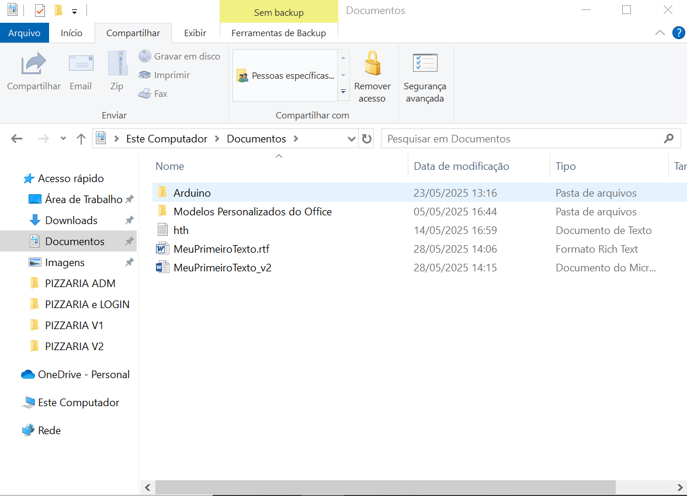
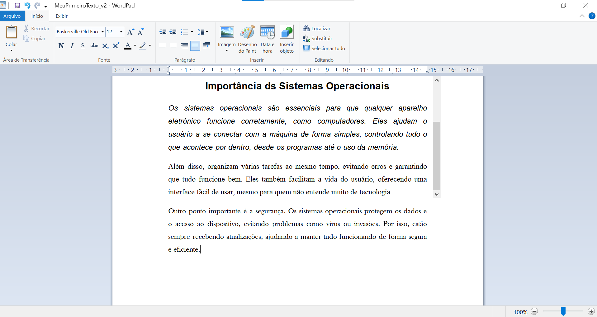
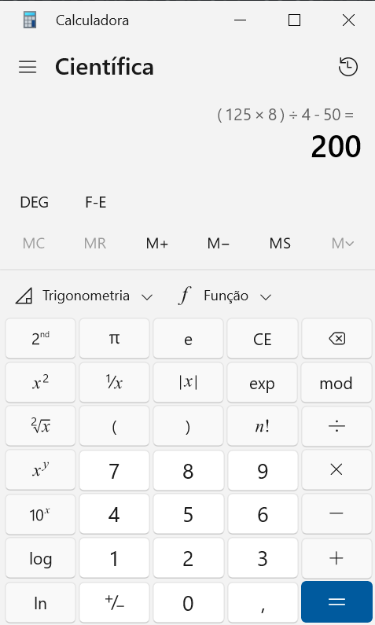
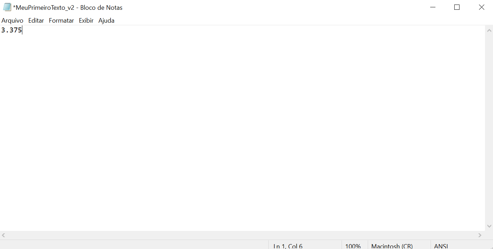
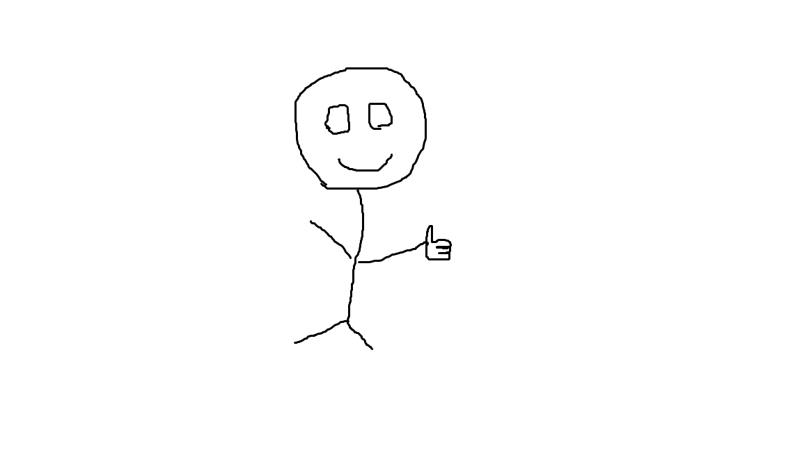
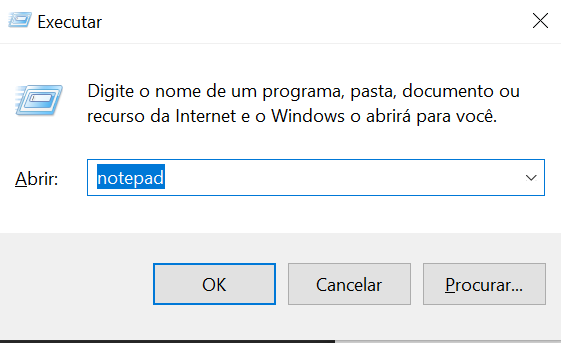
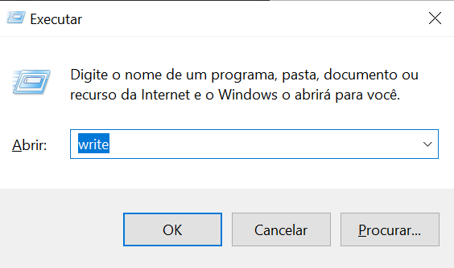

Durante a atividade, abri os programas WordPad, Calculadora e o Explorador de Arquivos. Em seguida, pratiquei as ações de minimizar, maximizar e restaurar cada uma das janelas, o que ajudou a entender melhor o comportamento das janelas com tamanhos ajustáveis. Após isso, organizei as três janelas lado a lado na tela, utilizando o recurso de arrastar para as bordas. Todas as janelas ficaram visíveis e acessíveis ao mesmo tempo , o que é útil para multitarefas. Por fim, abri o Gerenciador de Tarefas com o atalho. Na aba "Processos", localizei os processos ativos dos aplicativos abertos: wordpad.exe, calc.exe e explorer.exe. Foi possível observ ar o consumo de CPU e Memória de cada um, percebendo que são bem leves para o sistema. A visualiza ção desses dados foi simples e clara, auxiliando no entendimento do que está em execução no sistem a.






Sistemas de código aberto, como Linux, têm o código-fonte livre para uso e modificação. Já os fechados, como o Windows, são controlados pelas empresas. O aberto é gratuito e flexível, mas pode ser complexo. O fechado é mais fácil de usar, mas limitado e geralmente pago.
No Ubuntu que é aberto, não é necessário pagar ou ativar licença, e há mais opções de personalização. O Windows que é fechado é mais automático, exige licença e geralmente instala drivers sozinho.
O modo texto é mais rápido e leve, ideal para técnicos. A interface gráfica é visual e fácil de usar, boa para iniciantes. Cada um tem sua utilidade dependendo da situação.
Windows usa pastas como C:\Windows e C:\Users. Linux usa /bin, /etc e /home. Ambos são organizados, mas o Linux segue um padrão mais universal.
No Windows, permissões são gerenciadas por interface gráfica. No Linux, são controladas por comandos (r, w, x). Ambos visam proteger arquivos e dados.
Ao ligar o PC, o sistema é carregado pela BIOS/UEFI. No Linux, dá pra ver mais detalhes técnicos. No Windows, o processo é mais visual e escondido.
Pastas em rede são acessadas por vários usuários. Compartilhar é permitir o uso. Mapear é criar um "atalho" com letra de unidade (ex: Z:) para acesso fácil.

Segurança digital protege contra vírus, phishing, ransomware, etc. Vulnerabilidades são falhas no sistema. Credenciais precisam ser protegidas. Engenharia social engana usuários para roubar dados.
Manter o sistema atualizado, usar senhas fortes, evitar links suspeitos e usar firewall são práticas importantes. O firewall bloqueia acessos perigosos à rede.
Atualizações, usuários, permissões, programas de inicialização e rede são áreas essenciais. Saber configurar isso garante mais segurança e bom desempenho.